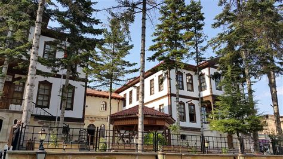

ohNando
Hakkımda
Özgeçmiş
Şehrim
Mirasımız
İletişim Sayfası
Bana Ulaşın
Giriş Yap
Resim Galerisi

Kastamonu Hakkında Bilgiler
Şehrin Nüfusu
388.990
Kuruluş Tarihi - Devleti
1200(?) - Kaşgalar
Kültürel Miras
- Kastamonu Kalesi
- Atabey Camii
- Şeyh Şaban-ı Veli Türbesi
- Nasurllah Camii
- Saat Kulesi
ve daha fazlası ...